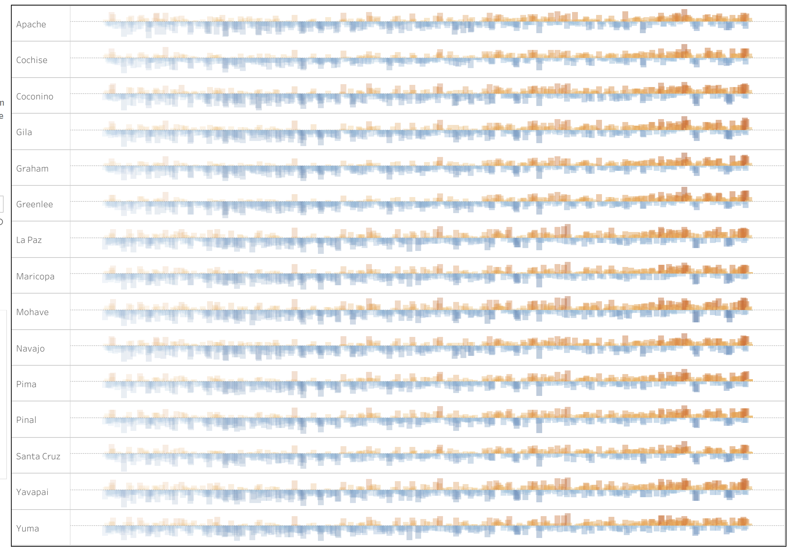
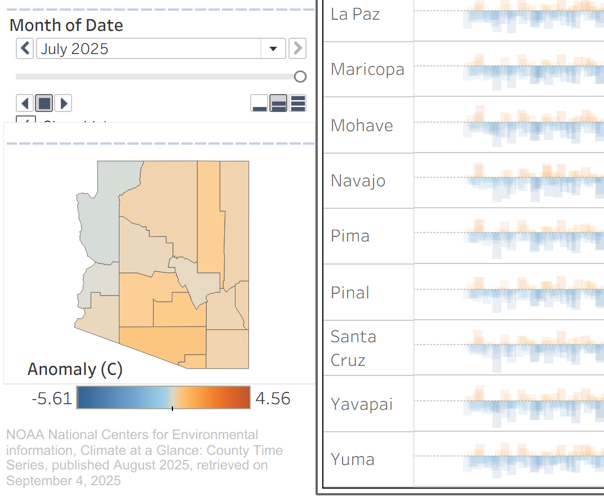
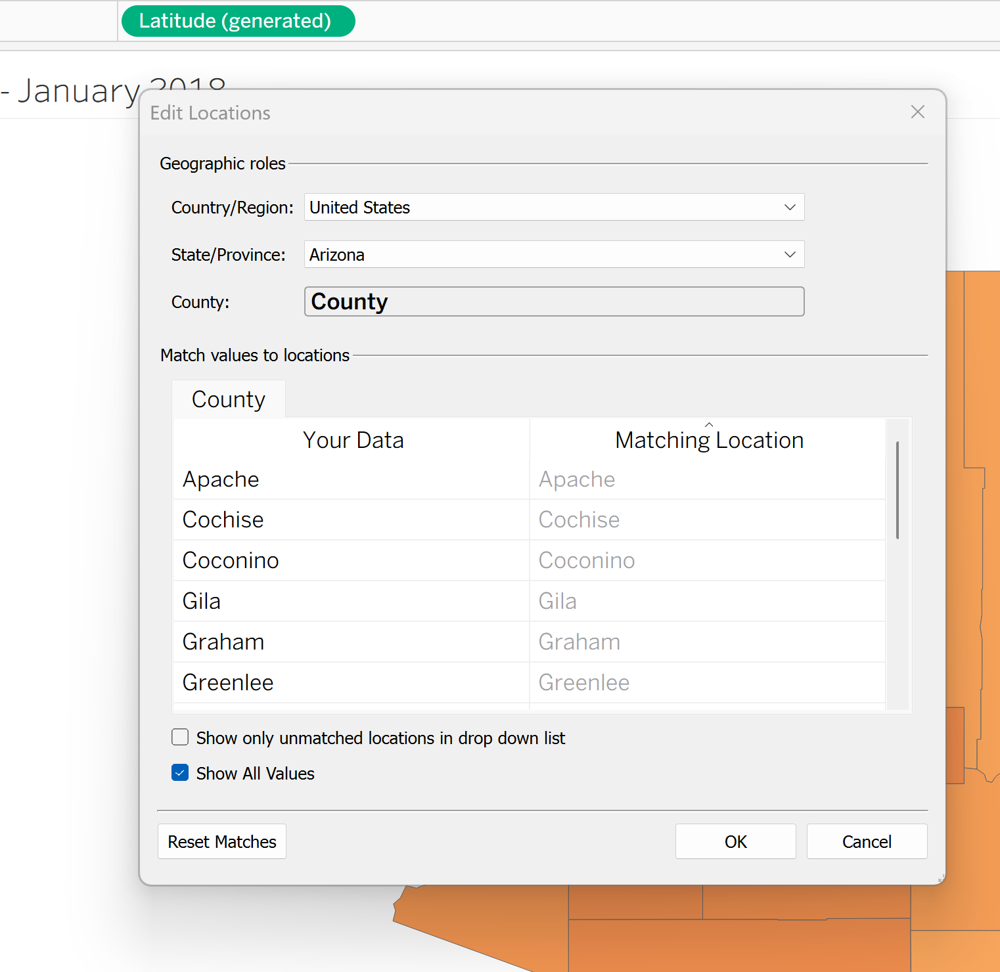

Arizona County Temperature Anomalies
Arizona's Climate Story: Beyond Phoenix — Addressing the "it's just urban sprawl" misconception
View Dashboard →
The Misconception
Many Arizonans believe Phoenix is only heating up because of all the new construction — more concrete, more pavement, fewer trees. They assume the rest of Arizona is fine, and that one cool summer proves climate change isn't real.
What I Created
An interactive visualization showing temperature patterns for all 15 Arizona counties from 1950 to 2025. Each county gets its own timeline where blue bars represent cooler-than-normal months and orange bars show hotter-than-normal months. A companion map shows where each county is located, and you can hit "play" to watch the warming unfold decade by decade.
What It Reveals
The data doesn't lie. Whether you're in remote Coconino County, agricultural Yuma, or urban Maricopa, the pattern is the same: predominantly blue (cool) from the 1950s through the early 1980s, then a dramatic shift to nearly all orange (hot) from the 1990s onward. This isn't just Phoenix. This is statewide.
Why It Matters
This visualization directly counters climate skepticism by showing that warming isn't limited to areas with urban development. It gives journalists, educators, policymakers, and residents concrete evidence that Arizona's climate is changing — no matter where you live in the state.
Yes, Phoenix is getting hotter. But so is Flagstaff. So is Tucson. So is every corner of Arizona. The occasional cool year doesn't change the unmistakable 75-year trend.
Detailed Project Overview
Create a unique time-series visualization covering all counties in Arizona from 1950 to August 2025, demonstrating the urban heat island effect and climate change impact across the whole state, not just Phoenix.
Analyze NOAA climate data from 1950–2025 to visualize Arizona's temperature deviation from historical baselines using a time-series bar chart with all counties listed, emphasizing the acceleration of warming trends over time.
Key Visualization Aspects
- Bar Chart Time Series Design: A unique, faded approach to small bars that display color-coded differences between positive and negative anomalies in each month compared to the baseline
- Interactive Play Button: Option to push play and see the change over time, following along with a small map of Arizona's counties to see the effects from a geographical standpoint
- Climate Storytelling: Used "hot" and "cold" colors to differentiate between the extent of the anomaly difference beyond the baseline
- Temporal Pattern Analysis: Clearly shows the transition from cooler-than-baseline temperatures (1950 to about 1980) to consistently hotter conditions (1990s–present)

Value & Impact
Makes complex climate data accessible through intuitive visual design
Evidence for policy decisions regarding development and heat mitigation
Demonstrates real-world climate change impacts at the local level
Challenges & Solutions
Counties Not Recognized Geographically
There was a small instance where the counties of Yuma and Greenlee were not being recognized, even though the data was similar across counties.
Solution: Standardized the data within the map options in Tableau and "overrode" the data to force it to recognize the missing counties.

The Approach & Process
Temperature Anomaly Methodology
The NOAA Time Series data has a baseline period option, where you can select a range of years to find the difference between the month highlighted and the average of that baseline within your measurement period.
I selected the most recent gap of 30 years that is commonly chosen, from 1991–2020. Also, with the years being more recent, you can determine the severity of the most recent decades' warming trends, as well.
Data Preparation
Loads and combines 15 separate county CSV files into a union. Handles YYYYMM date format and consolidates decades of records
F→C conversion through simple Tableau calculations. Anomaly conversion from Fahrenheit to Celsius. Extracts year and month components for temporal analysis
Technical Achievement
- Intuitive Tableau Design: Implemented calculated fields and custom chart types to create non-standard visualization combined with an interactive map
- Data Storytelling: Combined quantitative analysis with compelling visual narrative
- Color Theory & Psychology: Intuitive cool-to-hot color coding reinforcing data meaning
This project showcases Tableau visualization skills, climate data analysis expertise, and the ability to transform complex environmental data into compelling, actionable insights for both technical and general audiences.
Data Sources
NOAA Climate at a Glance
Source: NOAA National Centers for Environmental Information
Dataset: Climate at a Glance: County Time Series
Coverage: All 15 Arizona Counties — monthly temperature records, 1950–2025
Baseline Period: 1991–2020 (30-year climatological reference)
Published: August 2025, retrieved September 4, 2025